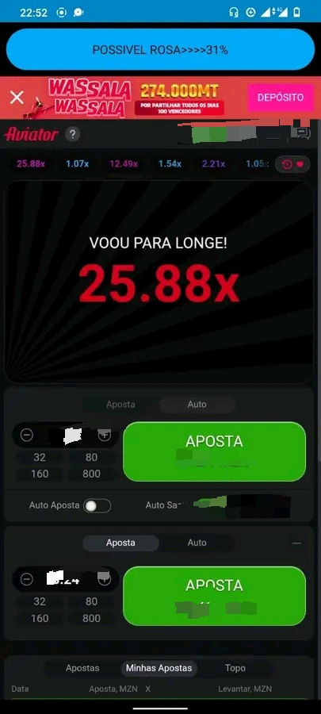

O BOT HUNTER É UM BOT QUE FUNCIONA 24/24 cujo o seu acerto depende da percentagem da previsão,isto é, quanto maior for a percentagem da previsão maior será a possibilidade de acerto do bot. Vaja uma foto que demostra a capacidade do bot a baixo👇

DICAS DO BOT HUNTER
FIQUE SEMPRE EM ALERTA CONTROLANDO A PERCENTAGEM DA PREVISÃO, DE ACORDO COM A PASSAGEM POR SE LIDA MAIS PARA CIMA
SE O GRÁFICO NÃO ESTIVER EM BOAS CONDIÇÕES A MELHOR OPÇÃO É RECUAR PARA ENVITAR PERDAS